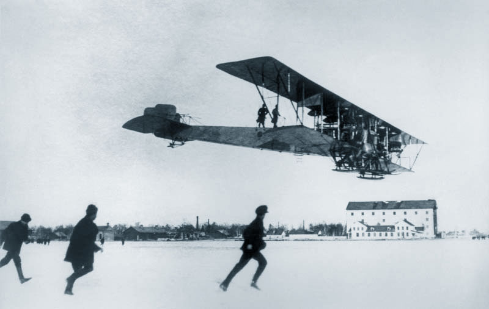

| Добро пожаловать в мир авиации! | |
|
История гражданской авиацииИстория гражданской авиации — это невероятный путь от первых робких экспериментов с воздушными шарами до современных сверхзвуковых самолетов. С развитием технологий, авиация преобразовала не только способы передвижения людей по миру, но и оказала влияние на экономику, политику и культуру разных стран. Гражданская авиация является неотъемлемой частью глобализированного мира, объединяя народы и континенты, снижая барьеры, а также открывая новые горизонты в развитии научных исследований. С древних времен люди мечтали о полетах, вдохновленные птицами. Первые упоминания о попытках подняться в небо можно найти в мифах и легендах. Однако только в XVIII веке с развитием воздушных шаров люди начали осознавать, что мечта о полетах может стать реальностью. К концу XIX века авиация приобрела более реальные формы, и, несмотря на опасности, люди продолжали стремиться к освоению небесных просторов. Эра реактивной авиацииВ 1940-х годах появилась первая реактивная авиация, которая изменила представление о скорости и дальности полетов. Реактивные двигатели позволили достичь высот, которые раньше были невозможны для обычных самолетов с поршневыми двигателями. Первые боевые реактивные самолеты открыли новую эру в военной авиации, а гражданская авиация обрела новое дыхание с появлением реактивных пассажирских лайнеров, таких как Boeing 707 и Douglas DC-8. Реактивные самолеты позволили значительно сократить время путешествий и стали символом прогресса. К примеру, перелет из Нью-Йорка в Лондон, который раньше занимал несколько дней, с введением реактивных лайнеров был сокращен до нескольких часов. Это стало настоящей революцией для пассажирских авиаперевозок и ускорило глобализацию экономики. Будущее авиацииСегодня авиационная отрасль стоит на пороге новых революционных изменений, которые могут привести к революции в способах передвижения. Гиперзвуковые самолеты, которые способны развивать скорость более чем в пять раз выше скорости звука, обещают значительно сократить время между континентами. Экологичные технологии, такие как электроприводы для малых самолетов и использование биотоплива, также начинают играть важную роль в минимизации углеродного следа авиации. Кроме того, дроны и автоматизированные системы управления становятся неотъемлемой частью авиации, а также открывают новые возможности для доставки грузов и пассажиров. Будущее авиации также включает в себя исследования в области летательных аппаратов, которые могут совершать вертикальные взлеты и посадки, что сделает городские перевозки более доступными и удобными. Пионеры авиацииПервые попытки создания летательных аппаратов относятся к древним временам. Уже в Древней Греции были попытки построить устройства для полетов, однако они не имели практического применения. В XVIII веке братья Монгольфье из Франции создали первый воздушный шар, который поднялся в воздух с помощью горячего воздуха. Это событие стало основой для последующих разработок в области авиации. От первых воздушных шаров братьев Монгольфье до братьев Райт, которые в 1903 году совершили первый управляемый полет на самолете, прошел долгий путь. Развитие авиации продолжалось, и каждый новый этап был связан с важнейшими открытиями и изобретениями, которые меняли ход истории. Военная авиацияВоенная авиация сыграла ключевую роль в ХХ веке, начиная с Первой мировой войны, когда самолеты впервые использовались для разведки и атак. Во время Второй мировой войны авиация стала основным инструментом стратегических операций, включая воздушные бои и бомбардировки. Это время также привело к созданию реактивных боевых самолетов, что существенно повлияло на военные действия по всему миру. Первая и Вторая мировые войны стали полем для испытаний новых летательных аппаратов, и многие из них после войны стали основой для гражданских и коммерческих самолетов. Развитие военной авиации также привело к созданию современных технологий, таких как высокоскоростные и дальнобойные самолеты, а также технологические инновации в области авиационных двигателей и аэродинамики. Современные технологииСовременная авиация использует передовые технологии, включая искусственный интеллект и автоматизацию, которые позволяют значительно повысить безопасность полетов и оптимизировать процессы управления. Авионика, композитные материалы, системы повышения топливной эффективности и снижение выбросов углекислого газа являются важнейшими аспектами современных самолетов. Современные технологии также включают в себя использование новых типов двигателей и инновационных конструкций, которые позволяют самолетам не только летать быстрее и дальше, но и делать это с меньшими затратами энергии. В ближайшие годы мы можем стать свидетелями появления новых типов самолетов, которые смогут летать в атмосферных слоях, где еще не было достигнуто стабильное существование коммерческих авиаперевозок. Безопасность полетовАвиационная безопасность — одна из важнейших областей авиации, которая включает в себя использование передовых технологий для обеспечения безопасности пассажиров и экипажей. В последние десятилетия большое внимание уделяется разработке аварийных систем и усовершенствованию процессов управления полетами, что способствует снижению числа авиационных происшествий. Компьютеризированные системы контроля, обучение пилотов и резервные системы стали стандартом для большинства современных самолетов. Кроме того, с развитием технологий появилась возможность удаленного мониторинга и анализа данных о полетах, что позволяет улучшать безопасность еще до того, как возникают потенциальные угрозы. Авиация и космосСвязь авиации и космоса становится все более тесной, и новые достижения в аэрокосмических технологиях имеют важное значение для развития авиации. Развитие суборбитальных полетов, аэрокосмические технологии, а также разработки в области ракетных двигателей открывают новые возможности для путешествий и исследования космоса. Авиационные компании также активно сотрудничают с космическими агентствами, разрабатывая новые системы для перевозки людей и грузов в космос. В будущем мы можем ожидать появления новых типов летательных аппаратов, которые смогут эффективно работать как в атмосфере Земли, так и в космическом пространстве. |
| Авиация — это небо без границ! | |